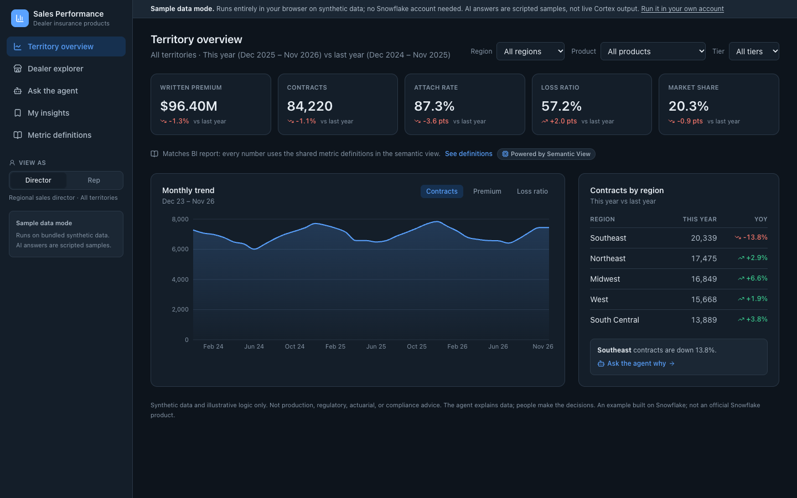
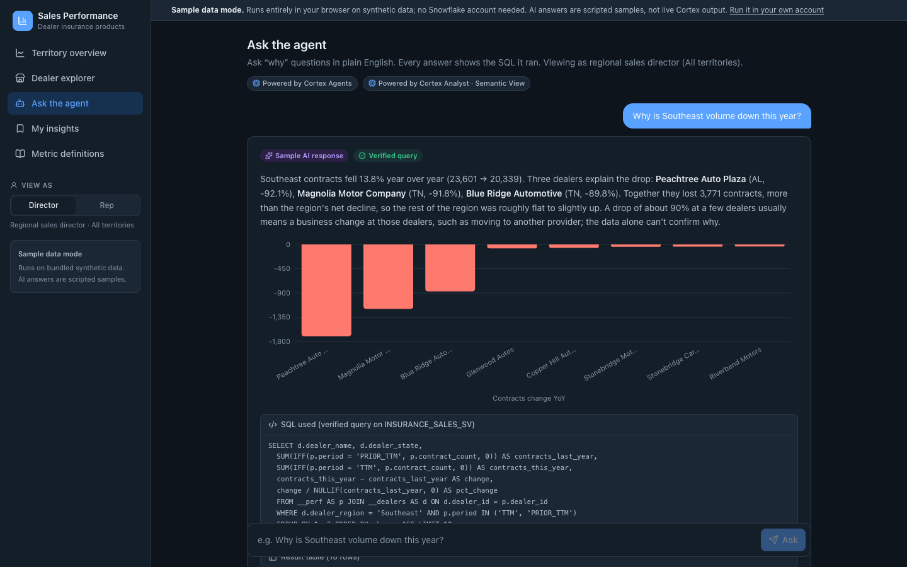
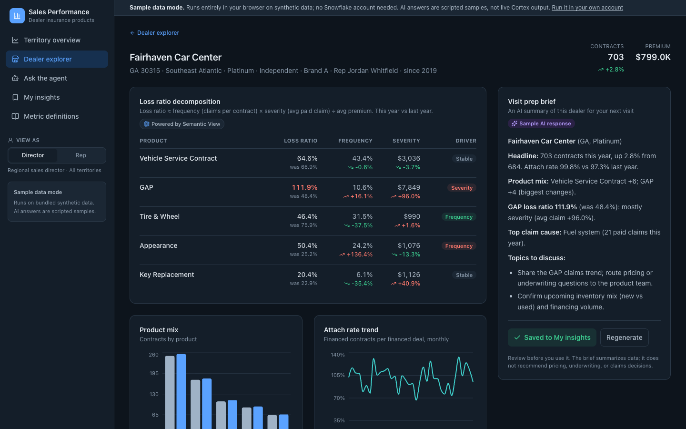
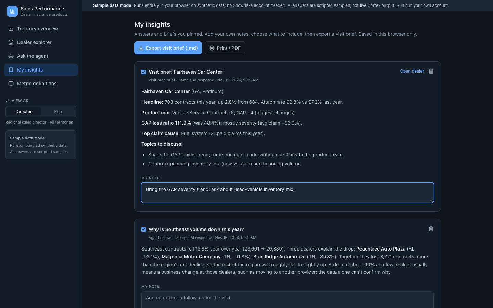
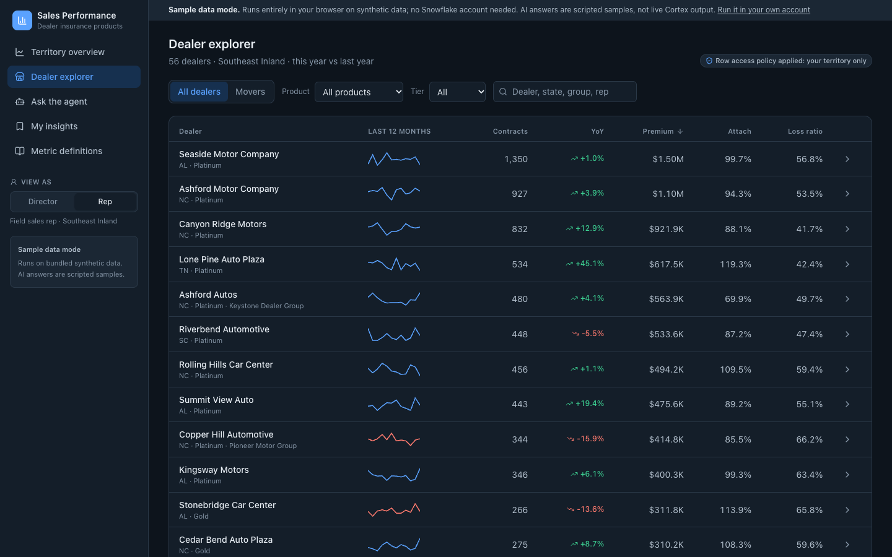
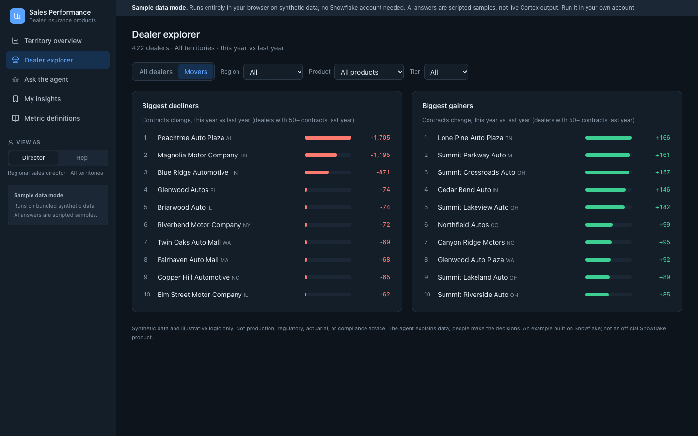
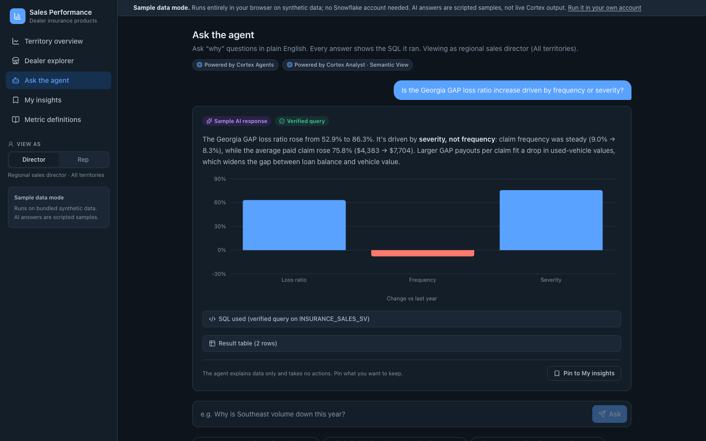

Ask why the numbers moved, not just what moved.
Field reps who sell vehicle service contracts (VSC), GAP, and tire & wheel coverage through car dealers get static reports that show what changed. This example adds a plain-English layer on top: reps can see which dealers drove a volume drop, whether a loss ratio jump comes from more claims or bigger claims, and where market share is slipping, then save a visit brief. Every answer shows the SQL behind it, and a person decides what to do next.
- No account neededThe hosted example runs on bundled synthetic data in your browser.
- DeployOne setup script creates everything. It ran in about 40 seconds end to end in our test.
- PrerequisitesEnterprise Edition (row access policy), Cortex AI in your region, Node.js 20+.
- Measured costAgent questions averaged about 0.07 credits each in our test. The XSMALL warehouse suspends after 60 seconds idle.

Synthetic data, illustrative logic. Every dealer, rep, and number on this page is invented by a seeded generator. This is an example, not production software, and not regulatory, actuarial, or compliance advice.
The problem
Dealer-distributed insurance sales teams already have BI reports. What they lack is a fast way to get from a changed number to its cause.
Reports show what, not why
A region is down or a loss ratio jumped, but the report doesn't say which dealers, products, or claim types are behind it.
Every question is a ticket
Follow-up questions go to the analytics team and come back days later, often after the dealer visit.
Answers must match BI and stay human-led
Definitions have to match the existing reports, and the tool explains data only. It never changes pricing, underwriting, or claims.
Walkthrough
The screenshots below come from the running app in sample-data mode. Figures are from this synthetic data set.
Spot the change
Five KPIs with year-over-year deltas, a monthly trend, and contracts by region. On this data set, Southeast contracts are down 13.8% while other regions grew.
Semantic ViewGet the why, with the SQL
"Why is Southeast volume down this year?" The agent names the three dealers that stopped selling (each down about 90%) and shows a chart, the SQL it ran, and a Verified query badge when it used a reviewed query.
Cortex AgentsCortex AnalystVerified queries
Separate frequency from severity
Each product's loss ratio is split into claim frequency and claim severity. For one Georgia dealer, GAP loss ratio rose from 48.4% to 111.9% because the average claim nearly doubled while claim counts barely moved, which fits falling used-vehicle values.
Semantic ViewAI_COMPLETE
Save, annotate, and share a visit brief
Reps pin agent answers and briefs, add their own notes, choose what to include, and export a visit brief. This is the human-in-the-loop step: the agent never takes action on its own.
Human in the loop
Find movers, and see only your territory
A sortable dealer table with sparklines and a Movers tab. Switch "View as" to the rep: in live mode a Snowflake row access policy limits results to the rep's territory (56 of 422 dealers here), in the app and in the agent's answers.
Row access policy


Snowflake capabilities
Each of these ran in live mode against the objects created by sql/setup.sql.
| Capability | What it does here | Object |
|---|---|---|
| Semantic view | One set of metric definitions (written premium, attach rate, loss ratio, frequency, severity, market share) with synonyms reps use, such as "penetration" for attach rate. | INSURANCE_SALES_SV |
| Verified queries | Ten reviewed question-and-SQL pairs. The agent uses them when a question matches, and the app shows a Verified query badge. | AI_VERIFIED_QUERIES on the view |
| Cortex Agents with Cortex Analyst | Answers "why" questions over the semantic view, called from the app with DATA_AGENT_RUN. | INSURANCE_SALES_AGENT |
| AI_COMPLETE | Writes the dealer visit prep brief from that dealer's numbers only. | Called from the app |
| Row access policy | Limits a rep role to its territory, in every query and in the agent's answers. | TERRITORY_POLICY on DEALERS |
Run it
Sample-data mode (no account)
Use the hosted example, or run it locally:
git clone https://github.com/sfc-gh-ooral/sfguide-insurance-sales-agent
cd sfguide-insurance-sales-agent
npm install
npm run devLive mode (your Snowflake account)
Generate the data, run setup, then point the app at your account with key-pair authentication:
npm run generate
snow sql -f sql/setup.sql -c <your_connection>
cp .env.example .env.local # fill in account, user, key path
npm run devRemove everything with sql/cleanup.sql. See the README for prerequisites, the objects created, and known limitations.
Verified query check
On this synthetic data set, all five suggested questions in the app were answered through the agent using a verified query. In a separate manual review of Cortex Analyst's SQL for all ten verified questions, nine matched the verified SQL and one was close (a time window shifted by a month). Treat this as a starting point for your own evaluation, not an accuracy guarantee.